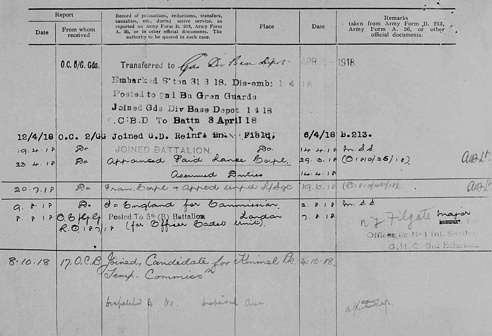
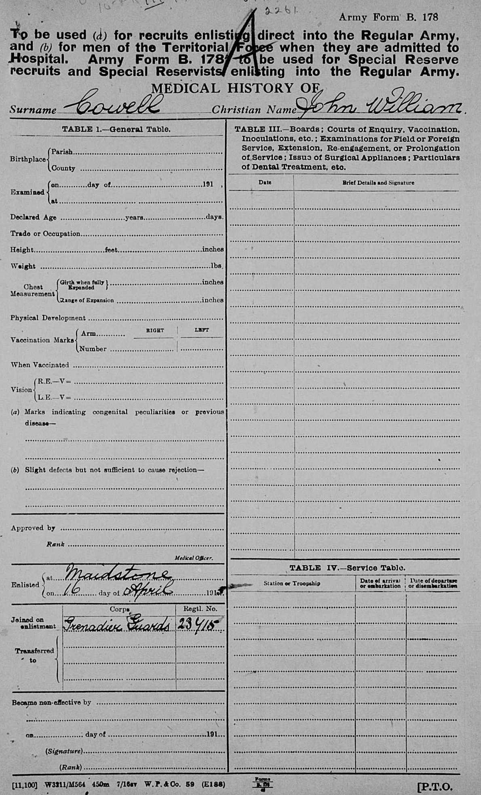

John William Cowell 1894 - c1978
[ Home ] | [ Calendar ] | [ Surnames Index ] | [ Errors ] | [ Family History ]A police constable and the child of Henry Cowell (a shepherd) and Charlotte Mullen, John Cowell, the second cousin twice-removed on the mother's side of Nigel Horne, was born in Ash, Kent, England on 25 Feb 18941,2,3,4,5 and baptised in East Malling, Kent, England on 27 May 1894. He married Daisy Morgan there at St James on 25 Dec 19177.
During his life, he was living in Larkfield, Kent, England on 31 Mar 19018; at 3 Illogan Terrace in Larkfield on 2 Apr 19119; on New Hythe Lane in Larkfield in 19154; and at 50 Sandling Lane, Maidstone, Kent on 29 Sept 19393. He served in the military from 16 Apr 1915 to 1 Feb 1919 in Abbeville, Oise, Picardie, France (regiment: Grenadier Guards; Service number: 23715 Gun shot wound to right leg 1 Aug 1917).
He died c. Nov 1978 in Maidstone, Kent, England6.
Parents
- Henry John was born on 26 Nov 1867
- Charlotte was born c. 1855
Citations
- 1901 England Census Online publication - Provo, UT, USA: The Generations Network, Inc., 2005.Original data - Census Returns of England and Wales, 1901. Kew, Surrey, England: The National Archives of the UK (TNA): Public Record Office (PRO), 1901. Data imaged from the National
- 1911 England Census Online publication - Provo, UT, USA: Ancestry.com Operations, Inc., 2011.Original data - Census Returns of England and Wales, 1911. Kew, Surrey, England: The National Archives of the UK (TNA), 1911. Data imaged from the National Archives, London, England.
- 1939 Register - Findmypast (was the head of the household)
- British Army Service Records - Findmypast
- Kent Baptisms - Findmypast
- England & Wales deaths 1837-2007 - Findmypast
- England & Wales Marriages 1837-2005 - Findmypast
- 1901 England, Wales & Scotland Census - Findmypast (was age 7 and the son of the head of the household)
- 1911 Census for England & Wales - Findmypast (was age 17 and the son of the head of the household)
Media
John William Cowell - Military Record 4
John William Cowell - Military Record 2
John William Cowell - Military Record 3
John William Cowell - Military Record 4
John William Cowell - Military Record 5

John William Cowell - Military Record 6
John William Cowell - Military Record 7
John William Cowell - Military Record 8
John William Cowell - Military Record 9
John William Cowell - Military Record 10
John William Cowell - Military Record 11
John William Cowell - Military Record 12a
John William Cowell - Military Record 12b
John William Cowell - Military Record 13

Kent Baptisms - GBPRS/B/82130394/1
1939 Register - TNA/R39/1744/1744D/005/38
England & Wales births 1837-2006 - BMD/B/1894/1/AZ/000130/035
England & Wales deaths 1837-2007 - BMD/D/1978/4/AZ/000226/052
England Births & Baptisms 1538-1975 - R_885449548
England & Wales marriages 1837-2005 - BMD/M/1917/4/AZ/000228/065
1911 Census For England & Wales - GBC-1911-RG14-03970-0235-3
British Army Service Records - GBM/WO363-4/7266697/120/1674
Kent marriages and banns - PRS/KENT/MAR/0089002/1
Kent Baptisms - PRS/KENT/BAP/0378894
Kent marriages and banns - PRS/KENT/MAR/0315594/1
Family Tree

Map
Generated by ged2site. Last updated on Jul 3, 2024
Known Issues
May have been living with mother on 31 Mar 1901, but the addresses don't match or aren't detailed enough to be sure
May have been living with father on 31 Mar 1901, but the addresses don't match or aren't detailed enough to be sure